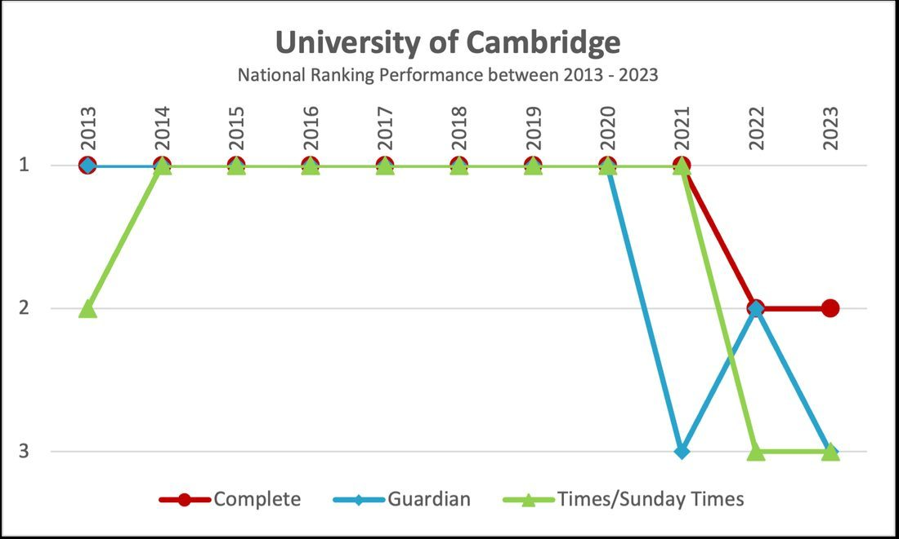
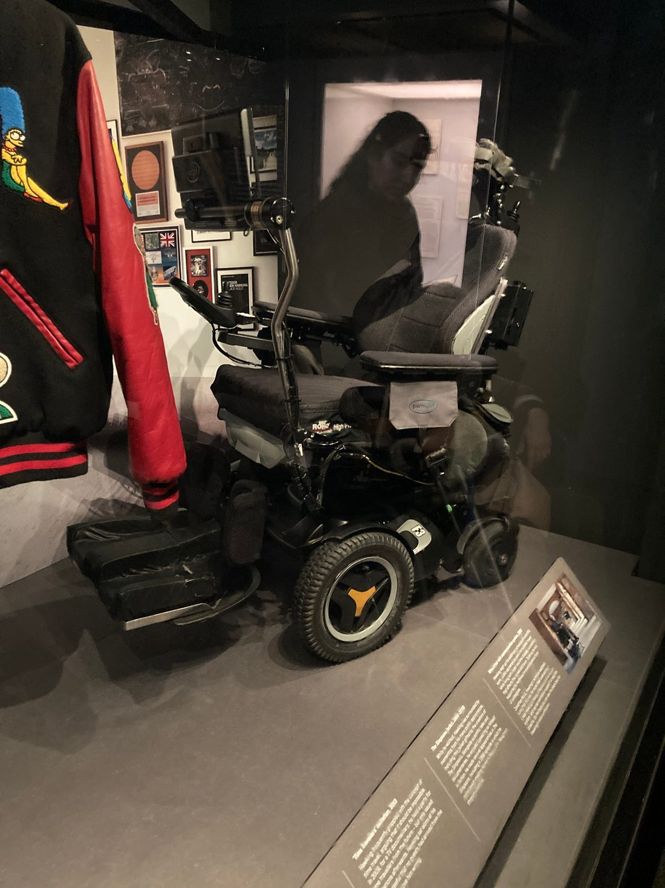
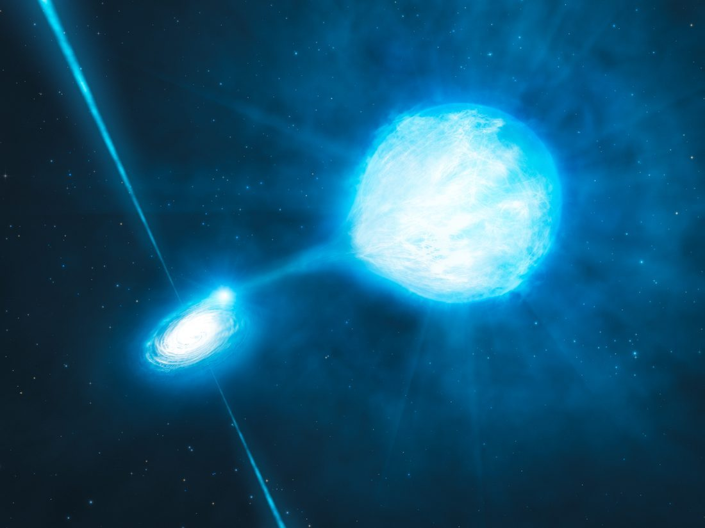
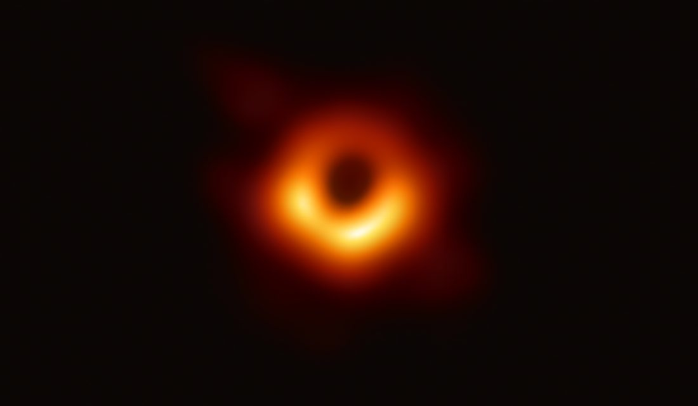
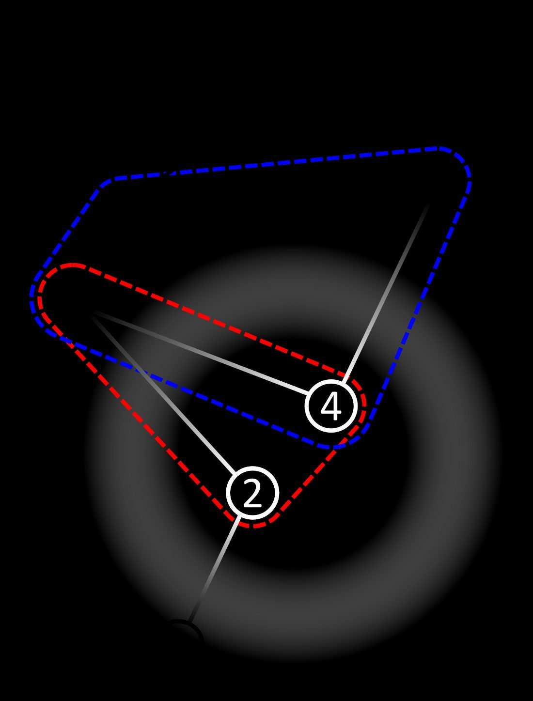

1 月 8 日，霍金出生。这一天恰是伽利略逝世的 300 周年。
他进入牛津大学攻读物理，展现过人天赋。

他到剑桥大学研究宇宙学，师从丹尼斯·席艾玛。

21 岁他被诊断肌萎缩侧索硬化（ALS），医生预言仅剩数年，他却活到了 76 岁。

1965 年彭罗斯证明引力坍缩必然产生奇点，霍金随即把这一套用到整个宇宙；1970 年，两人联合证明了著名的奇点定理。

他提出黑洞面积不减等性质，开启黑洞热力学的研究方向。

他把量子效应用于黑洞，证明黑洞会放出辐射并缓慢蒸发——此即霍金辐射。
他出任剑桥卢卡斯数学教授，这一讲席曾由牛顿担任。
《时间简史》出版，成为全球畅销书，把宇宙学带进大众视野。
3 月 14 日，霍金逝世，享年 76 岁。他的思想仍在宇宙学中回响。